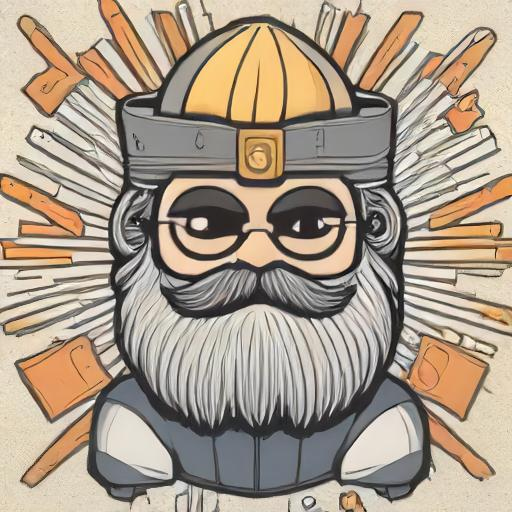

Limitless Wisdom

Description
From his throne in Valhalla, Odin could look across the whole
world. Odin was both intelligent and knowledgable but he wanted
more. Much more. Above all else, Odin longed to become Wise.
Ingredients
- Well of Mimir
- At least one, fully working eye
- The spear, Gungnir
- Access to the tree of Yggdrasil
- 6 foot of rope
Steps
- Tear out one eyeball from your face
- Cast the eyeball into the well of Mimir
- Stem the bleeding from your eye-socket (optional)
- Plant the spear Gungir in the ground. Sharp end facing upwards
- With a run-up, throw yourself onto the tip of the spear
- Remove the spear from your body
- Stem the bleeding from your spear injury (optional)
- Climb Yggdrasil, the tree of life until you reach the highest branch
- Tie one end of the rope to the sturdiest branch within reach
- Tie a noose in the other end of the rope and secure it around your neck
- Throw yourself from the tree, allowing the noose to catch you
- Remain hanging for 9 days and 9 nights
- Heal from your injuries (optional)
- Revel in your newfound wisdom, and enjoy